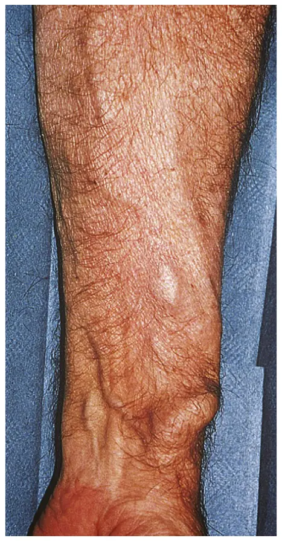

نسخه استخراجشده؛ ترجمه یا تأیید علمی انجام نشده است. وضعیت: captured
خانم ۵۵ سالهای که شنبه، دوشنبه و چهارشنبه همودیالیز میشود، برای کشیدن دو دندان لق آمده است. روی ساعد چپش یک برآمدگی نبضدار میبینی. نوبتش را کی بگذاری و فشارش را از کدام دست بگیری؟

در مرحلهی ۵ بیماری کلیه، بیمار برای زنده ماندن دیالیز یا پیوند لازم دارد. دو نوع دیالیز داریم:
همودیالیز فقط حدود ۱۵٪ کار کلیهی سالم را انجام میدهد. پس کمخونی، اختلال پلاکت و فشار خون بالا ادامه دارند. تخریب مکانیکی پلاکت در دستگاه و هپارین، خونریزی را بیشتر هم میکنند.
دست فیستول: کاف فشارسنج، تورنیکه، خونگیری و تزریق وریدی در این دست ممنوع است. کاف بادشده میتواند فیستول را ببندد و از کار بیندازد، و سوزن وریدی خطر فلبیت و لخته دارد.
نوع سؤال: ساخت کلمه · 6 خانه
حروف منبع: ر · ی · پ · ه · ا · ن